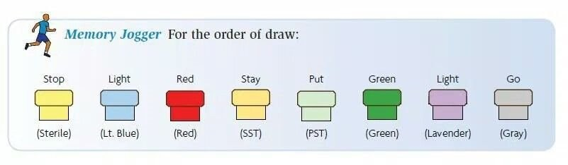
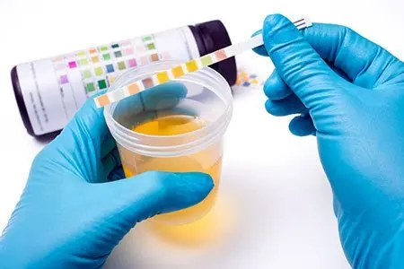
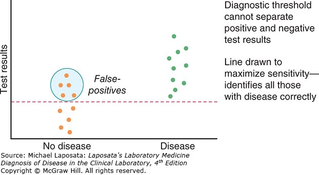
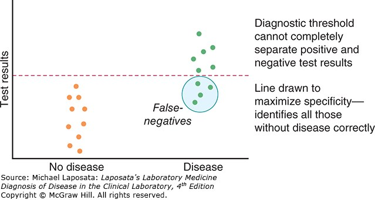

1 · Principles of Laboratory Diagnostics
Instructional Objectives
Topic Outline 1: Principles of Laboratory Diagnostics
- Define the importance and role of laboratory testing in the evaluation of a patient.
- Discuss the importance of patient counseling for diagnostic testing to reduce medical errors.
- Describe the phases of the diagnostic testing process: pretest phase, intratest phase, posttest phase.
- Explain the components of the: pretest phase, intratest phase, posttest phase.
- Identify which colored laboratory collection tubes correspond to common laboratory tests.
- Define the purpose and appropriate use of: stool studies, throat cultures, sputum cultures, blood cultures.
- Define point-of-care (POC) testing.
- Discuss common point-of-care tests performed in primary care and acute care settings.
- Compare and contrast qualitative and quantitative diagnostic tests.
- Discuss the availability, advantages, and limitations of point-of-care testing.
- Describe quality assurance measures necessary for point-of-care testing.
- Discuss accreditation and regulatory considerations related to point-of-care testing.
- Define sensitivity, specificity, positive predictive value, and negative predictive value.
- Differentiate between screening tests and diagnostic tests.
- Explain the concepts of pretest probability and posttest probability.
Professor Reynolds answered “what are the exams going to be like?” in the first three minutes of Lecture 1. Four things follow from it, and they shape this whole guide:
| She said | What it means for you |
|---|---|
| “We always also give you the normal ranges … I’m not going to just throw a random number at you and not give you context of whether that’s high or low.” | Do not memorise reference values. If a lab value appears in a stem, its range appears with it — on this exam and, she said, in every class. Spend the effort on what the value means. |
| “It will be based on the instructional objectives … more related to the tests themselves rather than maybe the specific diagnosis.” | Study the test: what to order, why, its limits, how to read it. The objectives above are the blueprint. |
| “Although a heart rhythm can be a diagnosis, you also need to be able to interpret an EKG by naming the rhythm.” | The one stated exception. It lands on Lectures 7 and 11–16, so Exams 2 and 3. |
| “There could be pictures … images of x-rays or CT scans … in addition to the vignette.” | Expect image-based vignettes, not only text. |
Her question style, in her own words: “which of the following laboratory tests would be best to evaluate a patient with microscopic anemia?” · “what would be the next test that you would order?”
1.1 · Objectives a & b — The role of testing, and counseling the patient
Diagnostics are tools to gain additional information, used in conjunction with a thorough history and physical examination — not in place of them. They are not necessarily therapeutic, though a blood culture that returns sensitivities certainly can be.
| What testing does |
|---|
| Confirms a diagnosis · informs health status · evaluates disease severity · directs treatment · monitors response to therapy · guides ongoing care through regular screening |
Counseling is framed as error reduction, not courtesy. Patients who are informed and understand the plan are more likely to be compliant, and compliance is what makes the result meaningful. Education covers the testing process, their questions, and the anticipated timeline for results.
| Effective diagnostic testing |
|---|
| Communicate clearly · consider ethnicity, culture, gender and age · prepare the patient properly · follow standards · measure and evaluate outcomes · manage services with a team approach · interpret, treat, monitor and counsel on abnormal outcomes · maintain proper records |
1.2 · Objectives c & d — The three phases
Each phase has its own guidelines and standards, and each has its own characteristic failures.
| Phase | Also called | Span |
|---|---|---|
| Pretest | Preanalytical | Begins with patient preparation, extends until the test begins |
| Intratest | Analytical | Performing the test and everything it encompasses |
| Posttest | Postanalytical | Begins once the test is complete; focuses on aftercare |
| Pretest — what to consider | Pretest — how it fails |
|---|---|
| Review history and risk assessment · identify contraindications · assess coping styles, fears and phobias · observe universal precautions · document relevant data · cost and reimbursement · patient and family education · documentation · ethical and legal considerations, including consent | Communication errors · medication administration as directed · proper labeling · technical errors — inadequate blood in the vacuum tube, delay in transport, inappropriate preparation and storage · inappropriate patient preparation — fasting |
Variables that can affect results: patient preparation · current drug therapy · time of specimen collection · physical activity · hydration status · age · sex · body mass index.
| Intratest | Posttest |
|---|---|
| Specimen or tissue collection · monitoring the testing environment · performing or assisting the procedure · providing emotional and physical comfort · administering analgesics and sedatives · monitoring vital signs · universal precautions · proper collection · minimizing delays · monitoring for side effects or complications | Monitor for complications — bleeding, infection, respiratory difficulties, perforation, adverse effects of sedation or anesthesia · interpret results and the patient's response · identify and treat critical values · communicate results clearly and sensitively |
1.3 · Objective e — Collection tubes and the order of draw
The deck carries a two-dozen-row table pairing every additive to every stopper colour. She does not want it memorised. “The thing I want you to know better, have a better handle on, is kind of the order and sort of the broad category — so light blue, think coags; lavender, we’re gonna be using this for like our CBC.” Then: “the order is important. I kind of want you to have an idea of the order.”
Her test of whether you know it: if you ordered coagulation studies and someone walks in with a lavender tube, you should immediately know that is the wrong tube.

| Order | Tube | Contents | Think |
|---|---|---|---|
| 1 | Yellow | Sterile media | Blood cultures |
| 2 | Light blue | Sodium citrate | Coagulation studies |
| 3 | Red | Non-additive serum tube | Serum chemistry |
| 4 | Gold / tiger | Serum separator | Serum chemistry |
| 5 | Green | Heparin | Plasma chemistry |
| 6 | Lavender | Ethylenediaminetetraacetic acid | Complete blood count |
| 7 | Gray | Glycolytic inhibitor | Glucose |
1.4 · Objective f — Stool, blood, sputum and throat studies
| Study | Purpose and use | The detail that gets tested |
|---|---|---|
| Stool studies | Non-invasive; diagnostic or screening. Indications: diarrhea, excessive flatus, abdominal discomfort, change in stool colour, recent travel, well water, prolonged antibiotics. Identifies overgrowth of normal flora, toxins, acquired bacteria, parasites | Specimen must be uncontaminated with urine or other secretions, in a dry clean container |
| Ova & parasites | Part of stool studies | Do NOT refrigerate — warm stool is best. Three separate random specimens, because of the parasite life cycle |
| Guaiac | Detects fecal occult blood; from a specimen or from the gloved finger after digital rectal examination | Heme oxidises the hydrogen peroxide in the guaiac → blue = positive. Use a small sample; a large one obscures the result |
| Blood cultures | Acute febrile illness with suspicion of septicemia. Both diagnostic and therapeutic — identifies the pathogen and gives sensitivities | Two separate samples from opposite arms, ideally before antibiotics. Aerobic first. Scrub and let dry; do not palpate after disinfection unless wearing sterile gloves |
| Sputum culture | Identifies respiratory pathogens and directs treatment | Two steps: Gram stain first (positive versus negative), then culture for identification and sensitivities. Sit upright, rinse mouth with water, three deep breaths, deep cough. Aerosols may assist. Acid-fast bacilli can be done from the same specimen |
| Throat culture | Isolates the pathogen, often streptococci, because of beta-hemolytic streptococcal pharyngitis. Most common ages 3–15; in adults, severe or recurrent sore throat, fever, palpable lymphadenopathy | Tongue blade improves visualization, relaxes the throat and reduces gag. Rotate the swab over the posterior throat, both tonsils, and any inflammation, exudate or ulceration. Avoid the tongue and lips. Rapid immunologic tests are highly accurate |
1.5 · Objectives g, h & j — Point-of-care testing
Definition: medical testing completed outside the centralized laboratory, at or close to the site of patient care. Also called near-patient, remote, satellite laboratory testing, or rapid diagnostics. Traditional testing is multi-step and delays treatment; this brings the laboratory to the patient.
| Universal features |
|---|
| Simple to use · reagents durable in storage and use · results align with established laboratory methods · safe during testing · performable by medical assistants, first responders, physicians, physician assistants, nurses and others — some by non-medical individuals at home |
| Common in primary care | Common in acute care |
|---|---|
| Blood glucose · hemoglobin A1c · urinalysis · rapid influenza · rapid strep · fecal occult blood · pregnancy testing · cholesterol · prothrombin time with international normalized ratio · drug screening Rapidly increasing: fentanyl and human immunodeficiency virus testing | Venous blood gas · point-of-care glucose · troponin · brain natriuretic peptide · D-dimer · prothrombin time with international normalized ratio · hemoglobin and hematocrit · rapid antigen tests · urine human chorionic gonadotropin · urinalysis dipsticks Machines: portable x-ray, electrocardiography, pulse oximetry, ultrasound |
| Advantages | Limitations |
|---|---|
| Convenience · rapid, less manpower · reduced visits · fingerstick rather than needle stick · better care where resources are limited — rural, disaster zone | Expensive · quality assurance difficult to control · operator and manufacturer variability · vocabulary not always standardised · results may be less precise · supply needs |
1.6 · Objective i — Qualitative versus quantitative
| Qualitative | Quantitative | |
|---|---|---|
| Answers | “Why” questions | “How many / how much” questions |
| Data | Observation, description | Numbers, statistical results |
| Approach | Observe and interpret | Measure and test |
| Analysis | Grouping of common data; non-statistical | Statistical analysis |

| Analyser type | Examples |
|---|---|
| Qualitative or semi-quantitative cartridge | Rapid strep (qualitative), influenza (qualitative), urinalysis dipstick (semi-quantitative), pregnancy (qualitative) |
| Single-use quantitative cartridge or strip with a reader | Glucose — the highest-volume point-of-care test, blood chemistries, coagulation, cardiac markers, C-reactive protein, hemoglobin A1c, arterial blood gases, electrolytes |
| Multiple-use quantitative cartridge / benchtop | Hemoglobin species with arterial blood gas, bilirubin, electrolytes, cardiac markers, drugs |
Non-instrumental point-of-care testing does not rely on instrumentation to interpret the result — urine pregnancy, coronavirus tests, fecal occult blood. Handheld equipment is easy to carry, one to two steps, few data points. Benchtop devices are stationary, multi-step, multiple data points. Both usually need reagents and consumables.
1.7 · Objectives k & l — Quality assurance and regulation
| Quality measures for point-of-care testing |
|---|
| Supervising testing and delivery of results · operators trained and competent · collection per the device instructions · accurate patient identification throughout testing and reporting · quality control · active enrollment in an External Quality Assurance program · devices connected to electronic information systems to minimise post-testing errors · a safe, secure working environment |
Clinical Laboratory Improvement Amendments (CLIA) — federal guidelines setting minimum quality standards for testing human samples at all types of sites. It began in the late 1960s after problems in the cytology laboratories reading Papanicolaou smears.
| Complexity category | What it means |
|---|---|
| Waived | Little chance of a negative outcome from a false result. The Joint Commission classifies all testing outside a traditional laboratory as waived — that is, point-of-care testing |
| Moderately complex | The majority — roughly 75% of the 12,000 available tests. Usually automated |
| Highly complex | Requires operator skill and decision making; not fully automated; complex instrumentation, such as cross match testing |
| Provider-performed microscopy | Slide examination of a freshly collected specimen by a provider — Gram stain, manual cell count |
| Agency | Role |
|---|---|
| Centers for Medicare & Medicaid Services | Issues certificates · collects user fees · inspects and enforces · approves accreditation organizations · monitors proficiency testing · publishes the rules |
| Food and Drug Administration | Categorizes tests by complexity · reviews waiver applications · develops categorization guidance |
| Centers for Disease Control and Prevention | Analysis, research and technical assistance · technical standards and practice guidelines · quality improvement studies · manages the advisory committee |
1.8 · Objective n — Screening versus diagnostic
| Screening | Diagnostic | |
|---|---|---|
| Who | Asymptomatic person — looking for evidence of disease | Person with symptoms — looking for the reason |
| Character | Typically inexpensive, easy to perform | May be more invasive, with risk of complications |
| Output | Indicates whether more testing is needed; not necessarily a diagnosis | Confirmation — the “definitive” diagnosis |
| Sequence | Do this first, before the expensive or time-consuming test | Follows an abnormal screen, or investigates symptoms directly |
1.9 · Objectives m & o — Sensitivity, specificity and predictive value
Walking the shark-bite example, she stopped before the numbers: “What do we think the percentage — we don’t, we’re not gonna do math, I’m not gonna make you do math” — and then asked only which scenario has the higher positive predictive value.
So learn the direction and the reason, not the formula. The worked figures below are here to make the reasoning concrete, not to be recomputed.
| Sensitivity | Specificity | |
|---|---|---|
| Measures | Test is positive when the person does have the condition | Test is negative when the person does not have the condition |
| Good at | Detecting disease | Excluding disease |
| Fewer | False negatives does not address false positives | False positives does not address false negatives |
| Mnemonic | SnNout — high Sensitivity + Negative rules out | SpPin — high Specificity + Positive rules in |
| Best for | Screening | Confirming |
| Example | Human immunodeficiency virus screening — very few infected individuals are missed | Human immunodeficiency virus confirmatory testing — minimises false-positive diagnoses |


| Measure | Question it answers | Belongs to |
|---|---|---|
| Sensitivity | If the disease is present, will the test be positive? | The test — test-centered |
| Specificity | If the disease is absent, will the test be negative? | |
| Positive predictive value | My patient’s test is positive — do they actually have it? | The population — patient-centered |
| Negative predictive value | My patient’s test is negative — are they actually clear? |
| Frostbite in January, same test, 95% sensitivity and 95% specificity |
|---|
| Michigan — prevalence about 10%. Of 1000 tested: 95 true positives against 45 false positives → positive predictive value about 68% |
| Florida — prevalence about 0.1%. Of 1000 tested: about 1 true positive against 50 false positives → positive predictive value about 2% |
Then she reversed it. A shark-bite detector, same 95% and 95%: in Florida a positive has a reasonable chance of being real; in Michigan, where shark bites are vanishingly rare, most positives are false. The tests are identical. The pre-test probability is what changed.
| Term | Meaning |
|---|---|
| Pre-test probability | Likelihood of the condition before the result — from signs, symptoms, history, risk factors and how common it is in the population |
| Post-test probability | Likelihood after the result — depends on sensitivity and specificity |
| Prevalence | How commonly something occurs; existing cases, usually a percentage |
| Incidence | How often something happens — not how commonly |